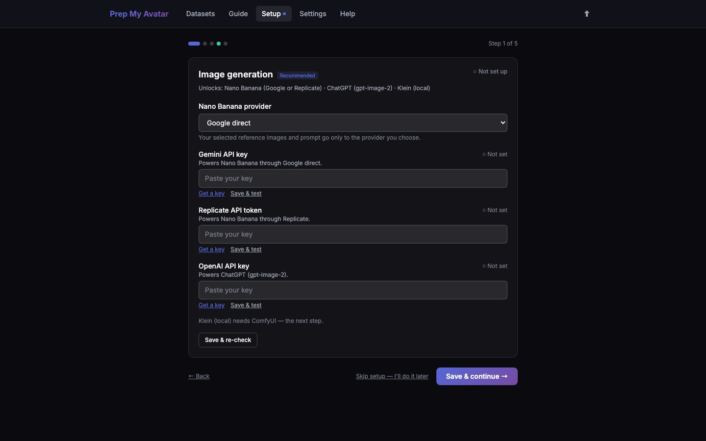

First run · 2 of 21
Step 2: Choose an image provider
This optional setup page enables the app to create new images for missing poses or framings. You can use imported photos and export a dataset without configuring any provider.

Before you begin
Choose at most one provider for your first test. Provider accounts and API use may cost money. A key is a private password: paste it only into the labelled field and never put it in screenshots or support reports.
- Gemini API key uses Nano Banana through Google.
- Replicate API token uses Nano Banana through Replicate.
- OpenAI API key uses OpenAI image generation. An OpenAI Platform API account and API billing are separate from a ChatGPT subscription.
- Local Klein is configured on the next page instead of using one of these keys.
Do this
- On Step 1 of 5 — Image generation, use Nano Banana provider only if you chose Gemini or Replicate: select Google direct for a Gemini key or Replicate for a Replicate token. OpenAI does not use this selector.
- Open the account link beside your chosen provider.
- Sign in to that provider, create a key or token, and copy it.
- Paste it into the matching field: Gemini API key, Replicate API token, or OpenAI API key.
- Select Save & test beside that field.
- Wait for a successful connection result.
- Select Save & continue →.
If you do not want remote generation, leave every field empty and select Save & continue →. You can add a provider later under Settings → Image engines.
You are finished when
Your chosen key shows Saved and its test succeeds, or you have deliberately left all keys empty. The wizard then shows Step 2 of 5 — Local generation — ComfyUI.